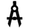
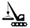

Cranex
Par mums
LiftCranes ir profesionāli apmācīti darbinieki ar plašu pieredzi celšanas, montāža, preču pārvietošanas jomā. Viņi labprāt palīdzēs jums izvēlēties , jums un jūsu uzņēmumam celtnis vai celšanas iekārtas. Pareizi uzstādīts kravas, kā arī iekraušanas drošības un izkraušanas-tas bija impulss mūsu uzņēmuma izveidei.
Mūsu uzņēmuma pamatdarbība ir piegāde, uzstādīšana, uzturēšana un modarnizaciâ celtņi, kā arī ražošanu un pārdošanu noņemams ceļamierīcēm, metalurģijas, ostas, kuģu remontu, naftas, gāzes, būvniecības un mašīnbūves nozares. Produktu kvalitāte ir viena no galvenajām prioritātēm savā darbā. Mēs dodam mūsu lietotājiem iespēju izmantot mūsdienu Eiropas kvalitātes produktus un progresīvo tehnoloģiju, augstas efektivitātes un drošai ekspluatācijai ar slodzi.
Pateicoties daudz kontaktu ar piegādātājiem no Eiropā, LiftCranes - celtņi un celšanas aprīkojumi piegādes piedāvā par konkurētspējīgām cenām.
Pēc jūsu pieprasījuma, zīmēšanas, projektu mūsu uzņēmumam pēc iespējas drīz ražošana, nestandarta iekārtu, instrumentu visaugstākās kvalitātes, un mēs varam piedāvāt standarta atvāžamo mehānismiem dažādiem nolūkiem, daudzi Eiropas ražotājiem.Visus piedāvātos ražošana ir profesionāli un ir kvalitātes sertifikāts vai atbilstības deklarāciju.
Jums ir nepieciešams tilta celtnis? 5 vienkārši soļi, un Jums tas būs.
Aizpildiet nelielu pieprasījuma formu
Mūsu komanda sagatavos tilta celtņa un estakādes projektu, ja Jums tā nav.
Profesionālie montētāji veiks uzstādīšanu un pieslēgšanu.
Celtņa izmēģināšanu veiks kompānija TUV
 Mūsu kompānija Jums nodos celtni ar oficiālu bīstamas iekārtas reģistrāciju Latvijas tehniskās uzraudzības iestādē.
Mūsu kompānija Jums nodos celtni ar oficiālu bīstamas iekārtas reģistrāciju Latvijas tehniskās uzraudzības iestādē.
Mūsu labākie tilta celtņi
"Mūsu kompānija vērsās pie SIA „CRAN-EX” ar uzdevumu izstrādāt estakādes projektu un uzstādīt celtni jaunā ražošanas telpā. Mūsu izvēles pamatkritēriji bija cena, uzstādīšanas laiks un obligāta ražotāja sertifikāta un oficiālo izplatīšanas tiesību esamība. Kompānija „CRAN-EX” ir lieliski tikusi galā ar uzstādīto uzdevumu."
"Mūsu tilta celtņa piegādātāja izvēle balstījās uz darba pieredzi iepriekšējos projektos un cenu piedāvājumu, kas atbilda noteiktajam budžetam. Izskatot dažas firmas, mēs nolēmām apstāties pie kompānijas „CRAN-EX”. Šo izvēli noteica iepriekšējo pasūtītāju pozitīvas atsauksmes un laba cena piedāvātajām itāļu ražotāja iekārtām."
"Mūsu uzņēmumam bija nepieciešams tilta celtnis darbam ļoti agresīvā vidē virs baseina ar sālsskābi. Uzdevumu sarežģīja tas, ka telpa zem jumta bija pārāk ierobežota celtnim ar šādu celtspēju. SIA „CRAN-EX“ spēja atrisināt visus izvirzītos uzdevumus."
"Tā kā mūsu uzņēmums ir liels metalurģiskās produkcijas ražotājs, tam nav parādu un nenokārtotu nodokļu saistību, SIA „CRAN-EX“ piedāvāja mums 100% pēcapmaksu 30 dienu laikā. Tas kļuva par izšķirīgu faktoru tilta celtņa piegādātāja izvēlē."